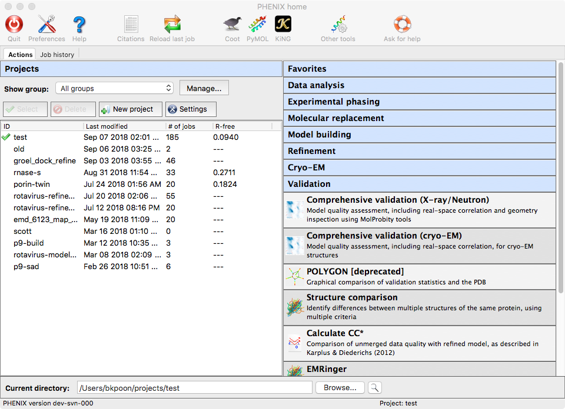
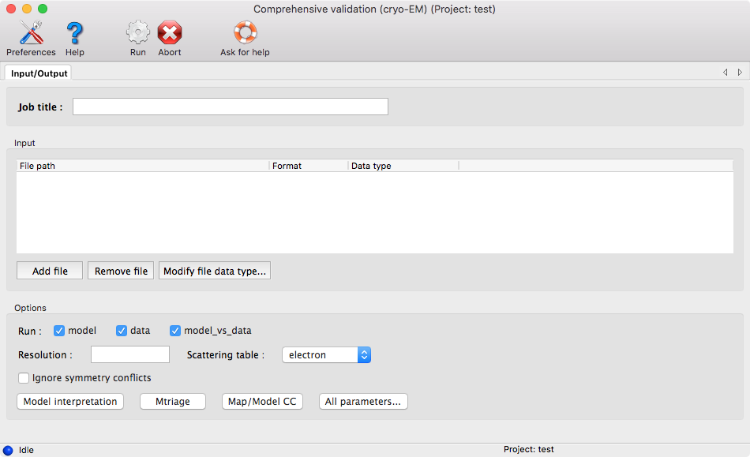
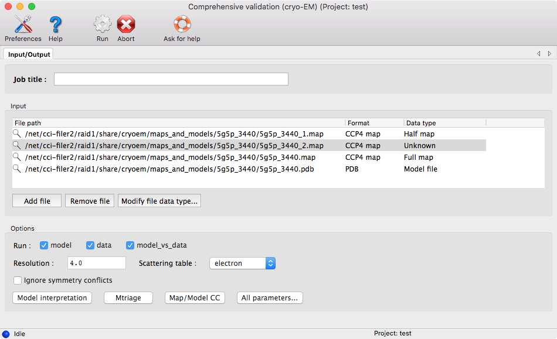
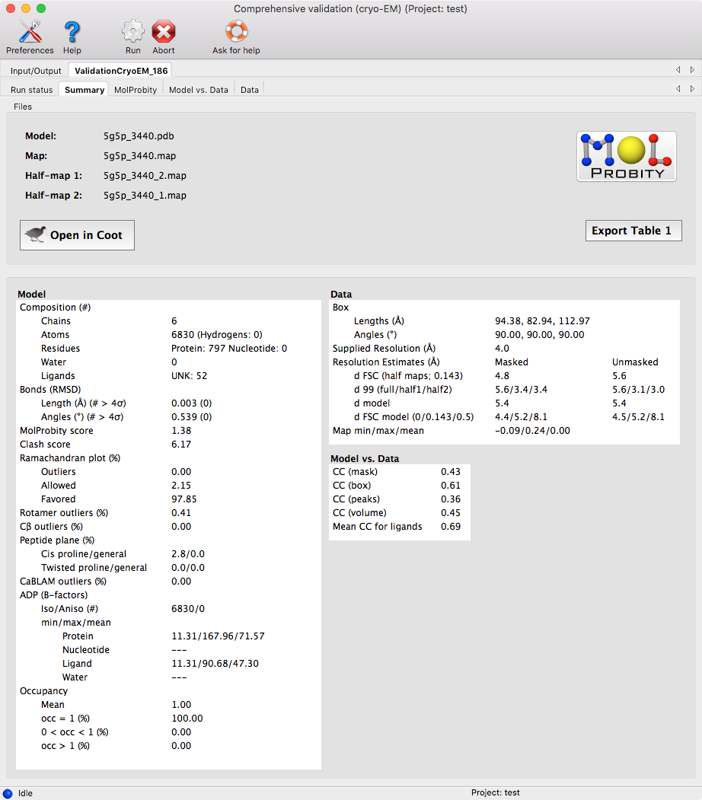
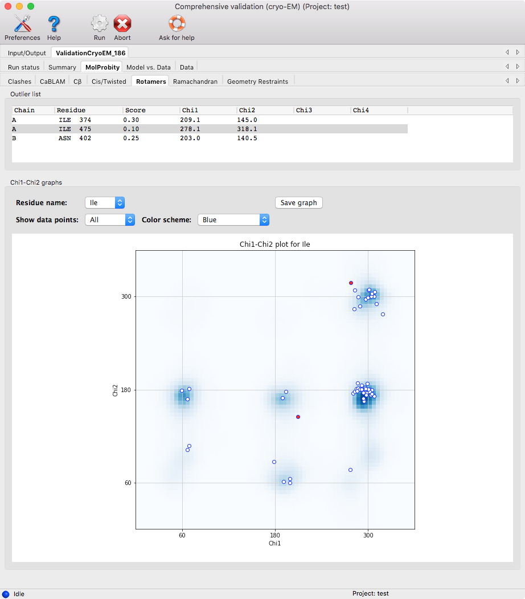
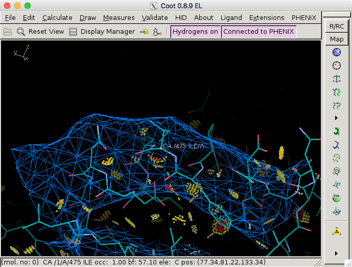
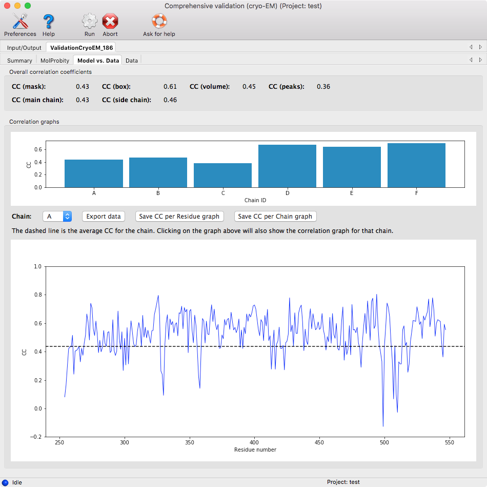
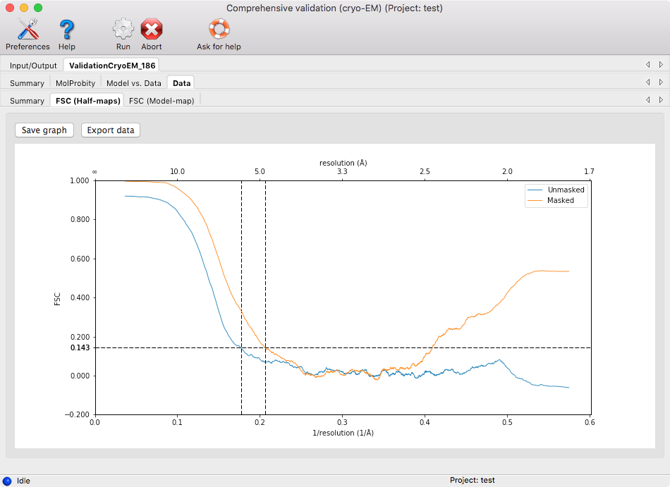

Phenix has multiple tools for validating cryo-EM maps and models. They are combined into a single tool called phenix.validation_cryoem. This can be run in the GUI by selecting "Comprehensive Validation (cryo-EM)" either from the "Validation" section or the "Cryo-EM" section.

Opening the program will show a window for supplying your input files and basic settings.

You will need at least a model and one map. If you provide half maps, be sure to indicate which map is the full map and which maps are the half maps. To do so, after adding the files, you can right-click on the row of a map file and select either "Full map" or "Half map."

Lastly, before running the program, enter the resolution of the map.
Important note: The default scattering table for cryo-EM tools is "electron." A consequence of this setting is that Phenix does not have electron scattering factors for ions. You may get error messages if your cryo-EM structures have ions.
Once the program finishes the analysis, you will get a page that summarizes all the results, as well as additional pages for more detailed information about each section.

Similar to the "Comprehensive Validation (X-ray/Neutron)" GUI, the model and map can be viewed in Coot and the pages with more detail information will allow you to zoom into the more problematic areas of your structure.
There is also a button, "Export Table 1," for exporting the summary statistics into plain text, comma separated text, or rich-text format.
This page contains the model-related metrics with additional pages for each major metric.
Generally, clicking on a row of a table or clicking a point in the graph

will zoom in on that particular atom/residue in Coot.

The results are subdivided into several categories listed below.
- Clashes: this shows areas of the structure where atoms may be too close to each other. In Coot, this is shown by red dots.
- CaBLAM: this is the output from phenix.cablam, which looks at several measures based on the geometry of the C-α atoms.
- Cβ: this looks for any deviations in the C-β atoms.
- Cis/Twisted: Cis peptides are generally rare (~5% of prolines and ~0.03% of other residues), so make sure that a cis conformation is really supported by the map. Twisted peptides are almost always incorrect.
- Rotamers: this checks that the sidechains are in the expected regions according to compiled distributions of the Χ-angles in the Top8000 database.
- Ramachandran: this checks that the dihedral angles of the protein residues are in the expected regions according to the Top8000 database.
- Geometry restraints: this checks that the bond lengths, bond angles, dihedral angles, and other geometric restraints do not deviate too much from the mean value.
This page shows how well the model fits into the map by calculating different correlation coefficients. Please check the first reference for a more detailed description of each correlation coefficient (CC). Table 3 from the reference is reproduced below.
| Metric | Region of the map used in the calculation | Purpose |
|---|---|---|
| CCbox | Whole map | Similarity of maps |
| CCmask | Jiang & Brunger mask with a fixed radius | Fit of the atomic centers |
| CCvolume | Mask of points with the highest values in the model map | Fit of the molecular envelope defined by the model map |
| CCpeaks | Mask of points with the highest values in the model and in the target maps | Fit of the strongest peaks in the model and target maps |
| CCvr_mask | Same as CCmask but atomic radii are variable and function of resolution, atom type and ADP | Fit of the atomic images in the given map |
Correlation coefficients per chain and per residue are also shown in plots.

The per residue plot is shown for a single chain. To change the chain, you can click on the per chain plot or use the drop down menu. Clicking on the per residue plot will center on the residue in Coot.
This page shows the output from phenix.mtriage. The output is the same as if you were to run phenix.mtriage separately. More details can be found in the Mtriage documemtation

The results are subdivided into several categories listed below.
- Summary: this shows basic statistics about the maps and summarizes the resolution estimates
- FSC (Half-maps): this shows a graph plotting the Fourier shell coefficient curve based on the half-maps (if available) with and without masking. The intersections of the curves with FSC=0.143 are shown.
- FSC (Model-map): this shows a graph plotting the Fourier shell coefficent curve based on the model map with and without masking. The intersections of the curves with FSC=0.5 are shown.
In the pages with graphs, you can save the graph and export the data used to generate the graphs into a text file.